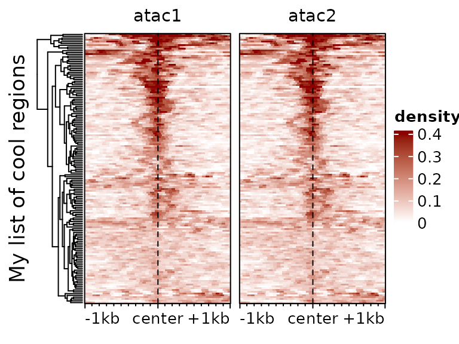
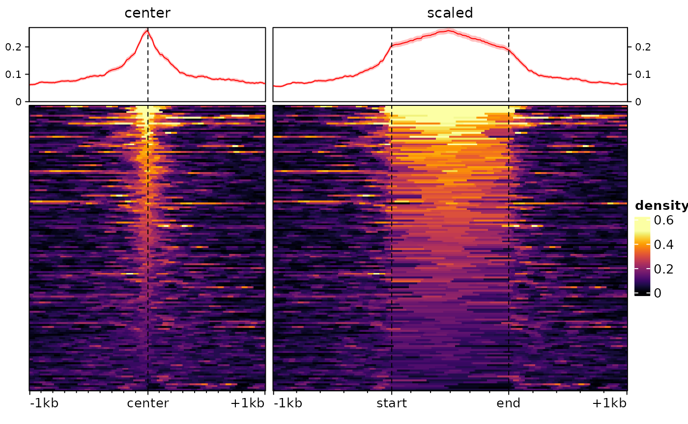

Visualizing signals across many regions
Pierre-Luc Germain
D-HEST Institute for Neuroscience, ETHLab of Statistical Bioinformatics, UZHmultiRegionPlot.RmdAbstract
This vignette covers the functions necessary for plotting signal across multiple regions. This involves acquiring positional information in/around given regions across tracks, functions to manipulate and aggregate these matrices, as well as functions to plot signal heatmaps from them.
Introduction
Since reading data from many regions is typically longer than plotting it, we split plotting and acquiring the data. The latter is done through function specific to this package, while the former involves especially a wrapper around the EnrichedHeatmap package. The interface here has been simplified, but for full functionality and customization it is recommended to have a look at the EnrichedHeatmap documentation.
Reading signal around a set of regions
The signal2Matrix function reads genomic signals around
the centers of a set of regions. It can read from bam and BigWig files,
although reading from bam files is considerably slower and we strongly
recommend using bigwig files. For generating bigwig files that show the
kind of signal you want to visualize, see the
vignette to this effect.
suppressPackageStartupMessages(library(epiwraps))
# we fetch the path to the example bigwig file:
bwf <- system.file("extdata/example_atac.bw", package="epiwraps")
# we load example regions (could be a GRanges or a path to a bed-like file):
regions <- system.file("extdata/example_peaks.bed", package="epiwraps")
# we obtain the matrix of the signal around the regions. For the purpose of this
# example, we'll read twice from the same:
m <- signal2Matrix(c(atac1=bwf, atac2=bwf), regions, extend=1000L, binMethod = "mean")## Reading /home/runner/work/_temp/Library/epiwraps/extdata/example_atac.bw
## Reading /home/runner/work/_temp/Library/epiwraps/extdata/example_atac.bw
m## class: EnrichmentSE
## 2 tracks across 264 regions
## assays(2): input enriched_score
## rownames(264): 1:4327751 1:4327924 ... 1:194964294 1:195054176
## rowData names(2): name score
## colnames(2): atac1 atac2
## colData names(0):
## metadata(0):The result is an object of class EnrichmentSE, which
inherits from a SummarizedExperiment,
and therefore affords all the manipulations that the latter offers. Each
region is stored as a row, and each sample or signal track as a column
of the object. So we can see that we have signal for 264 rows/regions
from two tracks.
We could subset to the first 50 regions as follows:
m[1:50,]## class: EnrichmentSE
## 2 tracks across 50 regions
## assays(2): input enriched_score
## rownames(50): 1:4327751 1:4327924 ... 1:32002589 1:32002740
## rowData names(2): name score
## colnames(2): atac1 atac2
## colData names(0):
## metadata(0):or obtain the coordinates of the queried regions :
rowRanges(m)## GRanges object with 264 ranges and 2 metadata columns:
## seqnames ranges strand | name score
## <Rle> <IRanges> <Rle> | <character> <numeric>
## 1:4327751 1 4327751 * | <NA> 0
## 1:4327924 1 4327924 * | <NA> 0
## 1:4328528 1 4328528 * | <NA> 0
## 1:4927873 1 4927873 * | <NA> 0
## 1:5180899 1 5180899 * | <NA> 0
## ... ... ... ... . ... ...
## 1:191885106 1 191885106 * | <NA> 0
## 1:191912950 1 191912950 * | <NA> 0
## 1:191937592 1 191937592 * | <NA> 0
## 1:194964294 1 194964294 * | <NA> 0
## 1:195054176 1 195054176 * | <NA> 0
## -------
## seqinfo: 1 sequence from an unspecified genome; no seqlengthsOne can further obtain more detailed information about the bins saved in the object:
## atac1 ( 264x200 ) :
## -1000/+1000bp (100 windows each)
## around the centers of given regions
## atac2 ( 264x200 ) :
## -1000/+1000bp (100 windows each)
## around the centers of given regionsThis means that each signal track is a matrix of 200 columns, because we asked to extend 1000bp on either side, and the default bin size is 10bp, making 100 bins/windows on each side.
Extracting and manipulating signal matrices
It is possible to extract the list of signal matrix for manipulations, e.g. for transformation:
# square-root transform
m2 <- lapply(getSignalMatrices(m), sqrt)See ?addAssayToESE for adding a list of signal matrices
(such as m2 here) to an existing EnrichmentSE
object. In addition, signal matrices can be combined, either manually or
using ?mergeSignalMatrices.
Plotting heatmaps
Once the signal has been read and the object prepared, (and eventually normalized, see the section below), we can plot heatmaps based on them as follows:
 We can use most arguments that are supported by EnrichedHeatmap
(and thus, by extension, by ComplexHeatmap),
for example:
We can use most arguments that are supported by EnrichedHeatmap
(and thus, by extension, by ComplexHeatmap),
for example:
plotEnrichedHeatmaps(m, colors=c("white","darkred"), cluster_rows=TRUE,
show_row_dend=TRUE, top_annotation=FALSE,
row_title="My list of cool regions")
Color-scale trimming
By default, the colorscale is trimmed to prevent most of it being
driven by rare extreme values. This can be controlled via the
trim argument (which indicates up to which quantile of data
points to keep to establish the colorscale). Compare for instance the
following two heatmaps:
plotEnrichedHeatmaps(m[,1], trim=1, scale_title="trim=1", column_title="trim=1 (no trim)",
top_annotation=FALSE) +
plotEnrichedHeatmaps(m[,1], trim=0.99, scale_title="trim=0.99",
column_title="trim=0.99", top_annotation=FALSE) +
plotEnrichedHeatmaps(m[,1], trim=0.9, column_title="trim=0.9",
scale_title="trim=0.9", top_annotation=FALSE)
The underlying data is exactly the same, only the color-mapping
changes. In the left one, which has no trimming, a single very high
value at the top forces the colorscale to extend to high values, even
though most of the data is in the very low range, resulting in a very
dark heatmap. In the one on the right, it’s the opposite: so much is
trimmed that many points reach the top of the colorscale, resulting in a
an ‘over-exposed’ heatmap. In practice, it is advisable to use minimal
trimming (e.g. the default is c(0.02,0.98)).
Normalization
We distinguish between two ways of calculating normalization factors:
either from the signal files (e.g. bigwig tracks), which is the most
robust way, or from an existing signal matrices (as for instance
contained in the aboveEnrichmentSE object).
Obtaining normalization factors for a set of signal files
The getNormFactors() function can be used to estimate
normalization factors using different methods, such as background
normalization (aka SSN), shared-peaks (aka MAnorm), TMM, S3norm, etc.,
on a set of either i) bam files or ii) bigwig files.
The normalization factors can then be applied on signal matrices, for example:
bwfiles <- c(atac1=bwf, atac2=bwf)
nf <- getNormFactors(bwfiles, method="background")## Comparing coverage in random regions...
# in this case since the files are identical the normalization factors are both 1:
nf## atac1 atac2
## 1 1
sm <- signal2Matrix(bwfiles, regions, extend=1000L)## Reading /home/runner/work/_temp/Library/epiwraps/extdata/example_atac.bw## Reading /home/runner/work/_temp/Library/epiwraps/extdata/example_atac.bw
sm <- renormalizeSignalMatrices(sm, scaleFactors=nf)
sm## class: EnrichmentSE
## 2 tracks across 264 regions
## assays(3): normalized input enriched_score
## rownames(264): 1:4327751 1:4327924 ... 1:194964294 1:195054176
## rowData names(2): name score
## colnames(2): atac1 atac2
## colData names(0):
## metadata(0):The object now has a new assay, called normalized, which
has been put in front and therefore will be used for most downstream
usages.
Normalization of the signal matrices themselves
It is also possible to normalize the signal matrices using factors
derived from the matrices themselves, using the
renormalizeSignalMatrices function. Specifically, beyond
providing scaling factors, two methods are available:
-
method="border"works on the assumption that the left/right borders of the matrices represent background signal which should be equal across samples. As a result, it will work only if 1) the left/right borders of the matrices are sufficiently far from the signal (e.g. peaks) to be chiefly noise, and 2) the signal-to-noise ratio is comparable across tracks/samples. -
method="top"instead works on the assumption that the highest signal (after some trimming of the extremes) should be the same across tracks/samples.
To illustrate these, we will first introduce some difference between our two tracks using arbitrary factors:
sm <- renormalizeSignalMatrices(sm, scaleFactors=c(1,4), toAssay="test")
plotEnrichedHeatmaps(sm, assay = "test")
Then we can normalize:
sm <- renormalizeSignalMatrices(sm, method="top", fromAssay="test")
# again this adds an assay to the object, which will be automatically used when plotting:
plotEnrichedHeatmaps(sm)## Using assay topNormalized
And we’ve recovered comparable signal across the two tracks/samples.
Clustering
The traditional ranking by decreasing overall enrichment can easily hide patterns in the data, which are instead revealed by clustering. While hierarchical clustering can be performed in the plotting function itself, this is based on the whole enrichment profiles and seldom provides good results in practice. For this reason, we provide a function that clusters the rows based on the distance-weighted enrichment scores. For example:
# not run - would fail here due to the absence of variability between tracks
cl <- clusterSignalMatrices(sm, k=3, scaleRows=TRUE)
# we could store this in the rowData of the object:
rowData(sm)$cluster <- cl
mycolors <- c("1"="red", "2"="blue", "3"="darkgreen")
plotEnrichedHeatmaps(sm, row_split=rowData(sm)$cluster, mean_color=mycolors)Note that here we are splitting into 3 clusters, you can also provide
a range of values (e.g. k=2:8) and the function will also
return cluster quality metrics for each.
[include proper example… Creb family]
Plotting aggregated signals
It is also possible to plot only the average signals across regions.
To do this, we first melt the signal matrices and then use ggplot2. The
meltSignals function will return a data.frame showing the
mean, standard deviation, standard error and median at each position
relative to the center, for each sample/matrix:
d <- meltSignals(sm)## Using assay topNormalized
head(d)## position sample mean SD SE median
## 1 -1000 atac1 0.1428603 0.1100839 0.006775199 0.1222137
## 2 -990 atac1 0.1433233 0.1173983 0.007225367 0.1222137
## 3 -980 atac1 0.1444343 0.1173860 0.007224609 0.1222137
## 4 -970 atac1 0.1455453 0.1180579 0.007265960 0.1222137
## 5 -960 atac1 0.1451750 0.1190121 0.007324686 0.1222137
## 6 -950 atac1 0.1467490 0.1182650 0.007278705 0.1222137This can then be used for plotting. For this example, since it consists of twice the same file, we’ll first create a fake difference:
# create a fake difference so that there's something to visualize in this example:
d$mean[d$sample=="atac2"] <- 0.06+(d$mean[d$sample=="atac2"]-0.06)*0.6Then we can plot normally with ggplot:
library(ggplot2)
ggplot(d, aes(position, mean, colour=sample)) +
geom_vline(xintercept=0, linetype="dashed") +
geom_ribbon(aes(position, ymin=mean-SE, ymax=mean+SE, fill=sample), alpha=0.4, colour=NA) +
geom_line(size=1.2) +
theme_bw() + labs(x="relative position", y="mean RPKM")## Warning: Using `size` aesthetic for lines was deprecated in ggplot2 3.4.0.
## ℹ Please use `linewidth` instead.
## This warning is displayed once every 8 hours.
## Call `lifecycle::last_lifecycle_warnings()` to see where this warning was
## generated.
Note that when the regions are clustered, the clusters can be passed
to melt and aggregate separately the different clusters, e.g.:
d <- meltSignals(sm, splitBy=cl).
Session information
## R version 4.3.3 (2024-02-29)
## Platform: x86_64-pc-linux-gnu (64-bit)
## Running under: Ubuntu 22.04.4 LTS
##
## Matrix products: default
## BLAS: /usr/lib/x86_64-linux-gnu/openblas-pthread/libblas.so.3
## LAPACK: /usr/lib/x86_64-linux-gnu/openblas-pthread/libopenblasp-r0.3.20.so; LAPACK version 3.10.0
##
## locale:
## [1] LC_CTYPE=C.UTF-8 LC_NUMERIC=C LC_TIME=C.UTF-8
## [4] LC_COLLATE=C.UTF-8 LC_MONETARY=C.UTF-8 LC_MESSAGES=C.UTF-8
## [7] LC_PAPER=C.UTF-8 LC_NAME=C LC_ADDRESS=C
## [10] LC_TELEPHONE=C LC_MEASUREMENT=C.UTF-8 LC_IDENTIFICATION=C
##
## time zone: UTC
## tzcode source: system (glibc)
##
## attached base packages:
## [1] grid stats4 stats graphics grDevices utils datasets
## [8] methods base
##
## other attached packages:
## [1] ggplot2_3.5.0 epiwraps_0.99.82
## [3] EnrichedHeatmap_1.32.0 ComplexHeatmap_2.18.0
## [5] SummarizedExperiment_1.32.0 Biobase_2.62.0
## [7] GenomicRanges_1.54.1 GenomeInfoDb_1.38.7
## [9] IRanges_2.36.0 S4Vectors_0.40.2
## [11] BiocGenerics_0.48.1 MatrixGenerics_1.14.0
## [13] matrixStats_1.2.0 BiocStyle_2.30.0
##
## loaded via a namespace (and not attached):
## [1] RColorBrewer_1.1-3 rstudioapi_0.15.0 jsonlite_1.8.8
## [4] shape_1.4.6.1 magrittr_2.0.3 GenomicFeatures_1.54.3
## [7] farver_2.1.1 rmarkdown_2.26 GlobalOptions_0.1.2
## [10] fs_1.6.3 BiocIO_1.12.0 zlibbioc_1.48.0
## [13] ragg_1.2.7 vctrs_0.6.5 memoise_2.0.1
## [16] Rsamtools_2.18.0 RCurl_1.98-1.14 base64enc_0.1-3
## [19] htmltools_0.5.7 S4Arrays_1.2.1 progress_1.2.3
## [22] curl_5.2.1 SparseArray_1.2.4 Formula_1.2-5
## [25] sass_0.4.8 bslib_0.6.1 htmlwidgets_1.6.4
## [28] desc_1.4.3 plyr_1.8.9 Gviz_1.46.1
## [31] cachem_1.0.8 GenomicAlignments_1.38.2 lifecycle_1.0.4
## [34] iterators_1.0.14 pkgconfig_2.0.3 Matrix_1.6-5
## [37] R6_2.5.1 fastmap_1.1.1 GenomeInfoDbData_1.2.11
## [40] clue_0.3-65 digest_0.6.34 colorspace_2.1-0
## [43] AnnotationDbi_1.64.1 textshaping_0.3.7 Hmisc_5.1-1
## [46] RSQLite_2.3.5 labeling_0.4.3 filelock_1.0.3
## [49] fansi_1.0.6 httr_1.4.7 abind_1.4-5
## [52] compiler_4.3.3 withr_3.0.0 bit64_4.0.5
## [55] doParallel_1.0.17 backports_1.4.1 htmlTable_2.4.2
## [58] BiocParallel_1.36.0 DBI_1.2.2 UpSetR_1.4.0
## [61] highr_0.10 biomaRt_2.58.2 rappdirs_0.3.3
## [64] DelayedArray_0.28.0 rjson_0.2.21 tools_4.3.3
## [67] foreign_0.8-86 nnet_7.3-19 glue_1.7.0
## [70] restfulr_0.0.15 checkmate_2.3.1 cluster_2.1.6
## [73] generics_0.1.3 gtable_0.3.4 BSgenome_1.70.2
## [76] ensembldb_2.26.0 data.table_1.15.2 hms_1.1.3
## [79] xml2_1.3.6 utf8_1.2.4 XVector_0.42.0
## [82] foreach_1.5.2 pillar_1.9.0 stringr_1.5.1
## [85] circlize_0.4.16 dplyr_1.1.4 BiocFileCache_2.10.1
## [88] lattice_0.22-5 deldir_2.0-4 rtracklayer_1.62.0
## [91] bit_4.0.5 biovizBase_1.50.0 tidyselect_1.2.0
## [94] locfit_1.5-9.9 pbapply_1.7-2 Biostrings_2.70.2
## [97] knitr_1.45 gridExtra_2.3 bookdown_0.38
## [100] ProtGenerics_1.34.0 xfun_0.42 stringi_1.8.3
## [103] lazyeval_0.2.2 yaml_2.3.8 evaluate_0.23
## [106] codetools_0.2-19 interp_1.1-6 GenomicFiles_1.38.0
## [109] tibble_3.2.1 BiocManager_1.30.22 cli_3.6.2
## [112] rpart_4.1.23 systemfonts_1.0.5 munsell_0.5.0
## [115] jquerylib_0.1.4 dichromat_2.0-0.1 Rcpp_1.0.12
## [118] dbplyr_2.4.0 png_0.1-8 XML_3.99-0.16.1
## [121] parallel_4.3.3 pkgdown_2.0.7 blob_1.2.4
## [124] prettyunits_1.2.0 jpeg_0.1-10 latticeExtra_0.6-30
## [127] AnnotationFilter_1.26.0 bitops_1.0-7 viridisLite_0.4.2
## [130] VariantAnnotation_1.48.1 scales_1.3.0 purrr_1.0.2
## [133] crayon_1.5.2 GetoptLong_1.0.5 rlang_1.1.3
## [136] cowplot_1.1.3 KEGGREST_1.42.0